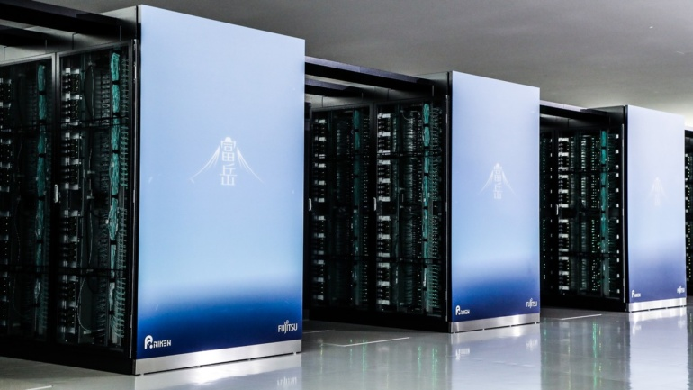

Рейтинг суперкомп’ютерів 2022: найпотужніші та просто цікаві
Офіційний рейтинг найпотужніших обчислювальних систем планети ведеться з 1992 року. Хоча першим суперкомп’ютером вважається Cray-1, створений 1976 року Сеймуром Креєм. Американського інженера в результаті прозвали «батьком суперкомп’ютерів», а його компанія Cray Inc, вже під крилом Hewlett Packard, досі є одним із лідерів суперкомп’ютеробудування. Основним мірилом швидкодії є бенчмарк щільних систем лінійних алгебраїчних обчислень Linpack. Хоча з 2017 року провадиться перетест альтернативним бенчмарком розріджених матриць HPCG.
Зміст
місце с 1 по 9
1 місце – Frontier
Схоже, суперкомп’ютера Summit Окріджської національної лабораторії виявилося замало — і HP збудувала для них нового монстра з потужністю 1.1 EFLOPS (1100 PFLOPS). Вирватися настільки сильно вперед вдалося завдяки 64-ядерним процесорам AMD EPYC 3rd Gen і відеокартам AMD Instinct MI250X. Енергоспоживання склало 21 МВт, що є другим найкращим показником у перерахунку на продуктивність. Екологічніший тільки молодший брат Frontier TDS (29 місце у Linpack).
2 місце – Supercomputer Fugaku
Торішній чемпіон Linpack (442 PFLOPS) родом з Японії все ще утримує лідерство в тесті HPCG. Все завдяки ставці на центральні процесори, замість відеокарт — Fujitsu A64FX з 48 ядрами архітектури ARM. Та й енерго-апетит у нього чемпіонський — майже 30 МВт.
3 місце — LUMI
Фінляндія славиться не лише найшвидшими автогонщиками, а й найшвидшим у Європі суперкомп’ютером. В обох бенчмарках Linpack і HPCG займає LUMI однакове 3 місце. До речі, у Фінляндії знаходяться ще два суперкомпи з TOP500, названі Mahti та Puhti.
4 і 5 місце — Summit і Sierra (149 і 95 PFLOPS)
Американські брати-суперкомп’ютери на базі 22-ядерних процесорів IBM POWER9, що знаходяться в Окріджській та Ліверморській національних лабораторіях. Використовуються для досліджень у галузі атомної енергетики та ядерної зброї. Крім CPU, використовують відеокарти NVIDIA Volta GV100. У тесті HPCG займає Summit більш високе 2 місце.
6 місце — Sunway TaihuLight
Ще один китайський обчислювальний монстр, розташований у місті Усі. Замість класичних CPU та GPU, використовує вузькоспеціальні RISC-процесори Sunway SW26010, кожен із 260 ядрами. Сумарно виходить 10 мільйонів ядер, хай і архітектурно слабших, ніж x86_64. В результаті Sunway видає 93 PFLOPS у Linpack, тоді як у альтернативному тесті HPCG показує лише 18 результат у світі.
9 місце — Tianhe-2A (інша назва Milkyway-2A)
Побудований китайською компанією Inspur для Національного суперкомп’ютерного центру Гуанчжоу. У середині 2010-х залишався найпотужнішою обчислювальною системою у світі аж два з половиною роки (зазвичай лідер змінюється кожні півроку). Грунтується на процесорах Intel Xeon E5-2692v2 сумарно із майже 5 мільйонами ядер. Є третім найбільш енерго-ненажерливим у світі — 18 МВт.
місце с 12 по 105
12, 13 і 15 місце — HPC5, Voyager-EUS2 і SSC-21
Найпродуктивніші суперкомп’ютери, що належать не державним науковим установам, а приватним компаніям. А саме італійській нафтогазовій компанії Eni S.p.A., а також Microsoft і Samsung. Перший побудований інженерами Dell, а другий і третій — власноруч Microsoft і Samsung. Причому Voyager клієнтоорієнтований — надає хмарні послуги Azure.
23 місце — Piz Daint (читається німецькою як «Піц Дайнт»)
Був запущений на підтримку Великого адронного коллайдера силами вищезгаданої Cray Inc. А після об’єднання з іншим швейцарським суперкомп’ютером Piz Dora, довгий час був найпотужнішим у Європі.
18 і 74 місце — Dammam-7 та Artemis
Топові суперкомп’ютери Близького Сходу, які належать приватній нафтовидобувній компанії Saudi Aramco (Саудівська Аравія) та хмарному провайдеру Group 42 (ОАЕ). Спроектовані HP та NVIDIA відповідно. В альтернативному бенчмарку HPCG займає Dammam-7 більш почесне 8 місце. До речі, Saudi Aramco належать ще чотири позиції у рейтингу суперкомп’ютерів TOP500.org.
57 і 60 місце — Gadi та Dragao
Найпотужніші суперкомп’ютери в південній півкулі знаходяться в Австралії та Бразилії відповідно. Перший створений компанією Lenovo, що не вимагає представлення, а другий — найбільшим європейським будівельником суперкомп’ютерів Atos (Франція).
79 і 105 місце — Karolina та Athena
Передові обчислювальні системи східної Європи розташовані в суперкомп’ютерних центрах чеської Острави та польського Кракова. Перший побудований силами техногіганта Hewlett-Packard, а другий порівняно невеликою польською компанією Format. На додачу Athena займає 9 місце у рейтингу найенергоефективніших суперкомп’ютерів Green500.
Якщо рахувати в штуках, то більше третини суперкомп’ютерів зі списку TOP500 розташовані на території Китаю. Але за сумарною обчислювальною потужністю лідирує США — майже половина. На третьому місці знаходиться Японія з часткою в штуках 7 %, а в потужностях — 14 %. За нею слідує Німеччина, Франція, Канада та Великобританія. Мільярдна Індія у своєму розпорядженні має всього три суперкомпи, тоді як півмільйонний Люксембург — аж два. Чемпіоном Африки вважається марокканський Toubkal (162 місце у глобальному рейтингу). А з чуток, Китай вже завершив будівництво двох екзафлопних систем — Sunway Oceanlite та Tianhe-3, але поки що тримає результати бенчмарків у секреті.